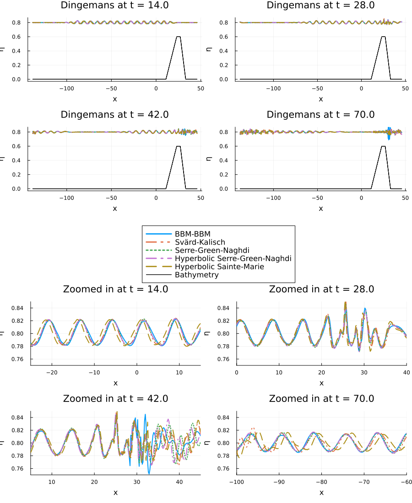
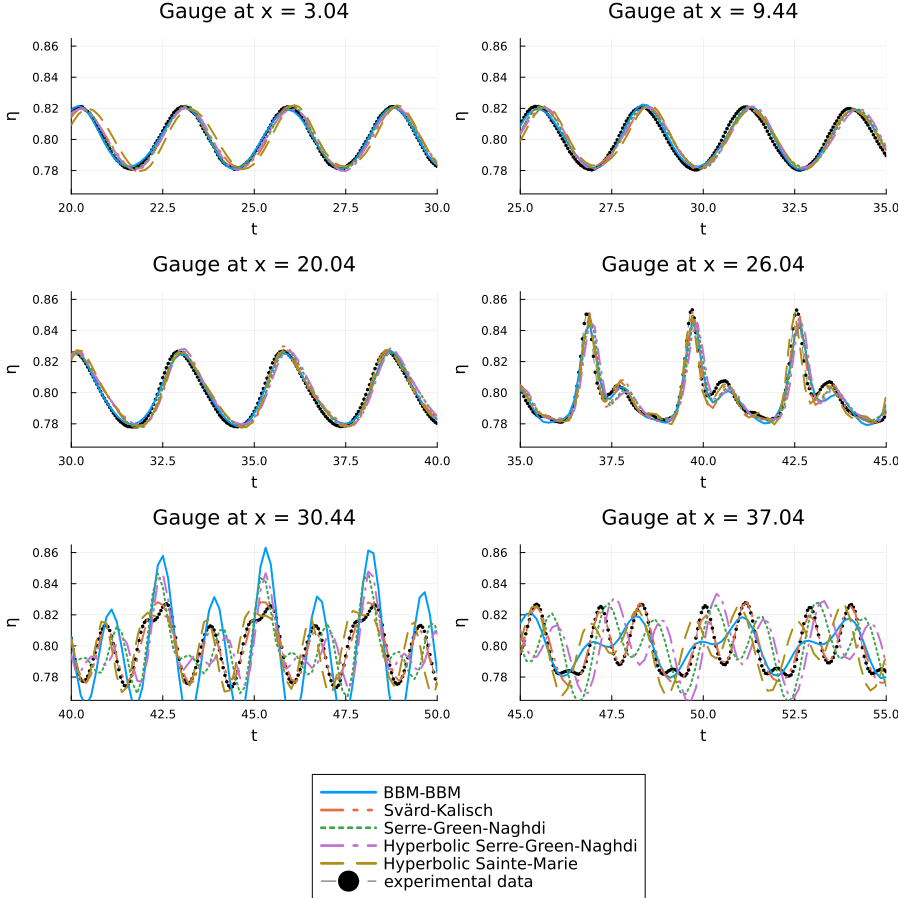

Dingemans Experiment
The Dingemans experiment provides a classic benchmark for validating dispersive shallow water models against experimental data. This experiment, conducted by Dingemans in 1994 , simulates waves generated by a wave maker that propagate over a varying underwater topography (bathymetry). See more at [Dingemans1994] and [Dingemans1997]
Experimental Setup
The experiment features waves with a small amplitude (A = 0.02) that encounter a trapezoidal bathymetry profile. The bottom topography starts flat, then rises to form an underwater "hill" before descending back to the original depth. This setup tests how well different dispersive wave models can capture the complex wave transformations that occur when waves interact with varying bottom topography.
The bathymetry profile consists of:
- A flat section from the wave maker to x = 11.01
- A linearly increasing slope from x = 11.01 to x = 23.04 (maximum height of 0.6)
- A flat plateau from x = 23.04 to x = 27.04
- A linearly decreasing slope from x = 27.04 to x = 33.07
- A flat section beyond x = 33.07
This configuration allows researchers to study wave shoaling (changes in wave characteristics due to depth variations), which is crucial for understanding coastal wave dynamics.
Numerical Simulation
Let's implement the Dingemans experiment and compare the performance of different dispersive shallow water models available in DispersiveShallowWater.jl.
First, we load the necessary packages:
using DispersiveShallowWater, SummationByPartsOperators, SparseArrays, OrdinaryDiffEqTsit5, PlotsNext, we set up the different equation systems we want to compare:
# BBM-BBM equations with variable bathymetrybbmbbm = BBMBBMEquations1D(bathymetry_type = bathymetry_variable, gravity = 9.81, eta0 = 0.0)# Svärd-Kalisch equations with specific parameter set (optimized for small wave numbers)sk = SvaerdKalischEquations1D(gravity = 9.81, eta0 = 0.8, alpha = 0.0004040404040404049, beta = 0.49292929292929294, gamma = 0.15707070707070708)# Serre-Green-Naghdi equations with variable bathymetrysgn = SerreGreenNaghdiEquations1D(bathymetry_type = bathymetry_variable, gravity = 9.81, eta0 = 0.8)# Hyperbolic approximation of Serre-Green-Naghdi equationshysgn = HyperbolicSerreGreenNaghdiEquations1D(bathymetry_type = bathymetry_mild_slope, lambda = 200.0, gravity = 9.81, eta0 = 0.8) # for actual simulations a higher lambda (~500) is recommended # it is chosen so low to be able to see the difference between it # and the SGN equation.# Hyperbolic approximation of the Sainte-Marie equationshysm = HyperbolicSainteMarieEquations1D(bathymetry_type = bathymetry_mild_slope, gravity = 9.81, eta0 = 0.8, h0 = 0.8)The initial condition initial_condition_dingemans provided by DispersiveShallowWater.jl automatically sets up the trapezoidal bathymetry and initial wave field.
initial_condition = initial_condition_dingemansboundary_conditions = boundary_condition_periodicWe create a computational domain that is large enough to contain the entire experimental setup, with the wave maker positioned appropriately. Especially, we extend the domain to the left, such that the waves entering the domain on the left due to the periodic boundary conditions, do not interfere with the original wave train.
coordinates_min = -138.0coordinates_max = 46.0N = 1024mesh = Mesh1D(coordinates_min, coordinates_max, N)For the spatial discretization, we use sixth-order accurate summation-by-parts operators. Specifically, upwind SBP operators are utilized for all equation systems except the hyperbolic Serre-Green-Naghdi equations. The hyperbolic Serre-Green-Naghdi equations involve only first derivatives, making central discretization appropriate, whereas the other models include higher-order derivatives that benefit from the upwind approach. It is important to note that when odd-order upwind operators are applied symmetrically to construct a central second-derivative operator, the resulting operator achieves one order higher accuracy (since it is even).
accuracy_order = 6solver_central = Solver(mesh, accuracy_order)D1 = upwind_operators(periodic_derivative_operator; derivative_order=1, accuracy_order=accuracy_order - 1, xmin=xmin(mesh), xmax=xmax(mesh), N=nnodes(mesh))D2 = sparse(D1.plus) * sparse(D1.minus)solver_upwind = Solver(D1, D2)We set up the time integration parameters. The experiment runs for a relatively long time to observe the full wave propagation and interaction with the bathymetry:
tspan = (0.0, 70.0)saveat = range(tspan..., length = 500)Now we create semidiscretizations for each equation system. Each semidiscretization bundles the mesh, equations, initial condition, solver, and boundary conditions:
semi_bbmbbm = Semidiscretization(mesh, bbmbbm, initial_condition, solver_upwind, boundary_conditions = boundary_conditions)semi_sk = Semidiscretization(mesh, sk, initial_condition, solver_upwind, boundary_conditions = boundary_conditions)semi_sgn = Semidiscretization(mesh, sgn, initial_condition, solver_upwind, boundary_conditions = boundary_conditions)semi_hysgn = Semidiscretization(mesh, hysgn, initial_condition, solver_central, boundary_conditions = boundary_conditions)semi_hysm = Semidiscretization(mesh, hysm, initial_condition, solver_central, boundary_conditions = boundary_conditions)We convert each semidiscretization to an ODE problem and solve it using the Tsit5 time integrator:
ode_bbmbbm = semidiscretize(semi_bbmbbm, tspan)ode_sk = semidiscretize(semi_sk, tspan)ode_sgn = semidiscretize(semi_sgn, tspan)ode_hysgn = semidiscretize(semi_hysgn, tspan)ode_hysm = semidiscretize(semi_hysm, tspan)options = (; abstol = 1e-7, reltol = 1e-7, save_everystep = false, saveat = saveat)sol_bbmbbm = solve(ode_bbmbbm, Tsit5(); options...)sol_sk = solve(ode_sk, Tsit5(); options...)sol_sgn = solve(ode_sgn, Tsit5(); options...)sol_hysgn = solve(ode_hysgn, Tsit5(); options...)sol_hysm = solve(ode_hysm, Tsit5(); options...)Visualization of Temporal Evolution
For proper comparison, we need to account for the fact that the BBM-BBM equations use a different reference level ($\eta_0 = 0$) compared to the other equations. We create a custom conversion function which allows us to easily shift the BBM-BBM results:
# BBM-BBM equations need to be translated vertically for comparisonshifted_waterheight(q, equations) = waterheight_total(q, equations) + 0.8DispersiveShallowWater.varnames(::typeof(shifted_waterheight), equations) = ("η",)Finally, we create comparison plots at four different time instances to observe how the waves evolve as they interact with the bathymetry:
# Define parameterstimes = [14.0, 28.0, 42.0, 70.0]y_limits = (-0.03, 0.87)# Model configurations: (semidiscretization, solution, label, conversion_function, linestyle)models = [ (semi_bbmbbm, sol_bbmbbm, "BBM-BBM", shifted_waterheight, :solid), (semi_sk, sol_sk, "Svärd-Kalisch", waterheight_total, :dashdotdot), (semi_sgn, sol_sgn, "Serre-Green-Naghdi", waterheight_total, :dot), (semi_hysgn, sol_hysgn, "Hyperbolic Serre-Green-Naghdi", waterheight_total, :dashdot), (semi_hysm, sol_hysm, "Hyperbolic Sainte-Marie", waterheight_total, :dash),]# Create snapshot plots for each timesnapshot_plots = []for time_val in times step_idx = argmin(abs.(saveat .- time_val)) # get the closest point to the time_val p = plot(title="t = $time_val", ylims=y_limits) for (i, (semi, sol, label, conversion, linestyle)) in enumerate(models) plot!(p, semi => sol, step=step_idx, label=label, conversion=conversion, plot_bathymetry=true, legend=false, title="Dingemans at t = $(time_val)", suptitle="", linewidth=[2 1], # 1 for the bathymetry linestyles=[linestyle :solid], # :solid for the bathymetry color=[i :black], # black for the bathymetry ) end push!(snapshot_plots, p)end# Create legend plotlegend_plot = plot(legend=:top, framestyle=:none, legendfontsize=11)for (i, (_, _, label, _, linestyle)) in enumerate(models) plot!(legend_plot, [], [], label=label, linestyles=linestyle, linewidth=2, color=i)endlegend_plot_bathymetry = plot(legend_plot, [], [], label="Bathymetry", color=:black,)xlims_zoom = [(-25, 15), (0, 40), (5, 45), (-100, -60)]snapshot_plots_zoom = [plot(snapshot_plots[i], xlims=xlims_zoom[i], ylims=(0.75, 0.85), title="Zoomed in at t = $(times[i])") for i in 1:4]# Combine all plotsall_plots = [snapshot_plots..., legend_plot_bathymetry, snapshot_plots_zoom...]plot(all_plots..., size=(900, 1100), layout=@layout([a b; c d; e{0.14h}; f g; h i]),)
The results show how different dispersive wave models capture the wave evolution over the trapezoidal bathymetry.
Comparison with Experimental Data
During the experiment of Dingemans, the wave evolution was recorded at six gauges along the flume. These measurements provide a reference for validating the numerical models. We compare the numerical results with the experimental data at the corresponding gauge locations.
t_values, x_values, experimental_data = data_dingemans()tlims = [(20, 30), (25, 35), (30, 40), (35, 45), (40, 50), (45, 55)]snapshot_plots_time = []for (j, x_val) in enumerate(x_values) p = plot(t_values, experimental_data[:, j], xlims=tlims[j], ylims=(0.765, 0.865), label="experimental data", linestyle=:dash, color=:gray, markershape=:circle, markercolor=:gray, markersize=1 ) for (i, (semi, sol, label, conversion, linestyle)) in enumerate(models) plot!(p, semi => sol, x_val, conversion=conversion, label=label, linestyle=linestyle, color=i, suptitle="", legend=false, title="Gauge at x = $(x_val)", linewidth=2 ) end push!(snapshot_plots_time, p)endlegend_plot_data = plot(legend_plot, [], [], label="experimental data", linestyle=:dash, color=:gray, markershape=:circle, markercolor=:gray, markersize=1)all_plots2 = [snapshot_plots_time..., legend_plot_data]plot(all_plots2..., layout=@layout([a b; c d; e f; g{0.16h}]), size=(900, 900), suptitle="")
In this setup, the numerical results from the Svärd-Kalisch equations can capture the wave evolution more accurately compared to the other models.
Plain program
Here follows a version of the program without any comments.
using DispersiveShallowWater, SummationByPartsOperators, SparseArrays, OrdinaryDiffEqTsit5, Plots# BBM-BBM equations with variable bathymetrybbmbbm = BBMBBMEquations1D(bathymetry_type = bathymetry_variable, gravity = 9.81, eta0 = 0.0)# Svärd-Kalisch equations with specific parameter set (optimized for small wave numbers)sk = SvaerdKalischEquations1D(gravity = 9.81, eta0 = 0.8, alpha = 0.0004040404040404049, beta = 0.49292929292929294, gamma = 0.15707070707070708)# Serre-Green-Naghdi equations with variable bathymetrysgn = SerreGreenNaghdiEquations1D(bathymetry_type = bathymetry_variable, gravity = 9.81, eta0 = 0.8)# Hyperbolic approximation of Serre-Green-Naghdi equationshysgn = HyperbolicSerreGreenNaghdiEquations1D(bathymetry_type = bathymetry_mild_slope, lambda = 200.0, gravity = 9.81, eta0 = 0.8) # for actual simulations a higher lambda (~500) is recommended # it is chosen so low to be able to see the difference between it # and the SGN equation.hysm = HyperbolicSainteMarieEquations1D(bathymetry_type = bathymetry_mild_slope, gravity = 9.81, eta0 = 0.8, h0 = 0.8)initial_condition = initial_condition_dingemansboundary_conditions = boundary_condition_periodiccoordinates_min = -138.0coordinates_max = 46.0N = 1024mesh = Mesh1D(coordinates_min, coordinates_max, N)accuracy_order = 6solver_central = Solver(mesh, accuracy_order)D1 = upwind_operators(periodic_derivative_operator; derivative_order=1, accuracy_order=accuracy_order - 1, xmin=xmin(mesh), xmax=xmax(mesh), N=nnodes(mesh))D2 = sparse(D1.plus) * sparse(D1.minus)solver_upwind = Solver(D1, D2)tspan = (0.0, 70.0)saveat = range(tspan..., length = 500)semi_bbmbbm = Semidiscretization(mesh, bbmbbm, initial_condition, solver_upwind, boundary_conditions = boundary_conditions)semi_sk = Semidiscretization(mesh, sk, initial_condition, solver_upwind, boundary_conditions = boundary_conditions)semi_sgn = Semidiscretization(mesh, sgn, initial_condition, solver_upwind, boundary_conditions = boundary_conditions)semi_hysgn = Semidiscretization(mesh, hysgn, initial_condition, solver_central, boundary_conditions = boundary_conditions)semi_hysm = Semidiscretization(mesh, hysm, initial_condition, solver_central, boundary_conditions = boundary_conditions)ode_bbmbbm = semidiscretize(semi_bbmbbm, tspan)ode_sk = semidiscretize(semi_sk, tspan)ode_sgn = semidiscretize(semi_sgn, tspan)ode_hysgn = semidiscretize(semi_hysgn, tspan)ode_hysm = semidiscretize(semi_hysm, tspan)options = (; abstol = 1e-7, reltol = 1e-7, save_everystep = false, saveat = saveat)sol_bbmbbm = solve(ode_bbmbbm, Tsit5(); options...)sol_sk = solve(ode_sk, Tsit5(); options...)sol_sgn = solve(ode_sgn, Tsit5(); options...)sol_hysgn = solve(ode_hysgn, Tsit5(); options...)sol_hysm = solve(ode_hysm, Tsit5(); options...)# BBM-BBM equations need to be translated vertically for comparisonshifted_waterheight(q, equations) = waterheight_total(q, equations) + 0.8DispersiveShallowWater.varnames(::typeof(shifted_waterheight), equations) = ("η",)# Define parameterstimes = [14.0, 28.0, 42.0, 70.0]y_limits = (-0.03, 0.87)# Model configurations: (semidiscretization, solution, label, conversion_function, linestyle)models = [ (semi_bbmbbm, sol_bbmbbm, "BBM-BBM", shifted_waterheight, :solid), (semi_sk, sol_sk, "Svärd-Kalisch", waterheight_total, :dashdotdot), (semi_sgn, sol_sgn, "Serre-Green-Naghdi", waterheight_total, :dot), (semi_hysgn, sol_hysgn, "Hyperbolic Serre-Green-Naghdi", waterheight_total, :dashdot), (semi_hysm, sol_hysm, "Hyperbolic Sainte-Marie", waterheight_total, :dash),]# Create snapshot plots for each timesnapshot_plots = []for time_val in times step_idx = argmin(abs.(saveat .- time_val)) # get the closest point to the time_val p = plot(title="t = $time_val", ylims=y_limits) for (i, (semi, sol, label, conversion, linestyle)) in enumerate(models) plot!(p, semi => sol, step=step_idx, label=label, conversion=conversion, plot_bathymetry=true, legend=false, title="Dingemans at t = $(time_val)", suptitle="", linewidth=[2 1], # 1 for the bathymetry linestyles=[linestyle :solid], # :solid for the bathymetry color=[i :black], # black for the bathymetry ) end push!(snapshot_plots, p)end# Create legend plotlegend_plot = plot(legend=:top, framestyle=:none, legendfontsize=11)for (i, (_, _, label, _, linestyle)) in enumerate(models) plot!(legend_plot, [], [], label=label, linestyles=linestyle, linewidth=2, color=i)endlegend_plot_bathymetry = plot(legend_plot, [], [], label="Bathymetry", color=:black,)xlims_zoom = [(-25, 15), (0, 40), (5, 45), (-100, -60)]snapshot_plots_zoom = [plot(snapshot_plots[i], xlims=xlims_zoom[i], ylims=(0.75, 0.85), title="Zoomed in at t = $(times[i])") for i in 1:4]# Combine all plotsall_plots = [snapshot_plots..., legend_plot_bathymetry, snapshot_plots_zoom...]plot(all_plots..., size=(900, 1100), layout=@layout([a b; c d; e{0.14h}; f g; h i]),)t_values, x_values, experimental_data = data_dingemans()tlims = [(20, 30), (25, 35), (30, 40), (35, 45), (40, 50), (45, 55)]snapshot_plots_time = []for (j, x_val) in enumerate(x_values) p = plot(t_values, experimental_data[:, j], xlims=tlims[j], ylims=(0.765, 0.865), label="experimental data", linestyle=:dash, color=:gray, markershape=:circle, markercolor=:gray, markersize=1 ) for (i, (semi, sol, label, conversion, linestyle)) in enumerate(models) plot!(p, semi => sol, x_val, conversion=conversion, label=label, linestyle=linestyle, color=i, suptitle="", legend=false, title="Gauge at x = $(x_val)", linewidth=2 ) end push!(snapshot_plots_time, p)endlegend_plot_data = plot(legend_plot, [], [], label="experimental data", linestyle=:dash, color=:gray, markershape=:circle, markercolor=:gray, markersize=1)all_plots2 = [snapshot_plots_time..., legend_plot_data]plot(all_plots2..., layout=@layout([a b; c d; e f; g{0.16h}]), size=(900, 900), suptitle="")References
- Dingemans1994Dingemans (1994): Comparison of computations with Boussinesq-like models and laboratory measurements. URL: https://resolver.tudelft.nl/uuid:c2091d53-f455-48af-a84b-ac86680455e9
- Dingemans1997Dingemans (1997): Water Wave Propagation Over Uneven Bottoms (In 2 Parts). DOI: 10.1142/1241